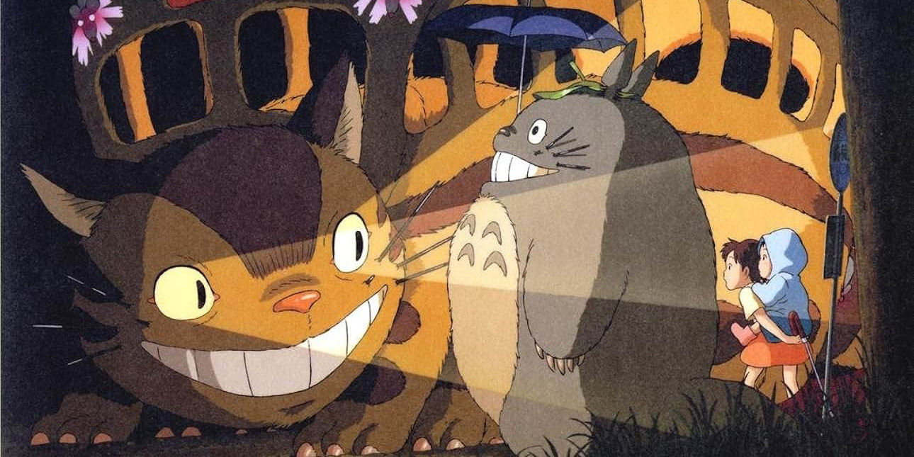
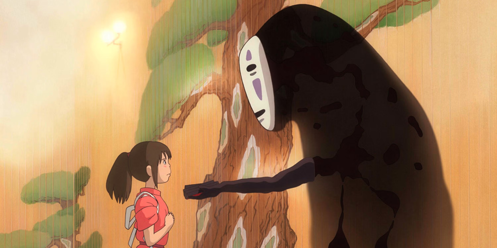
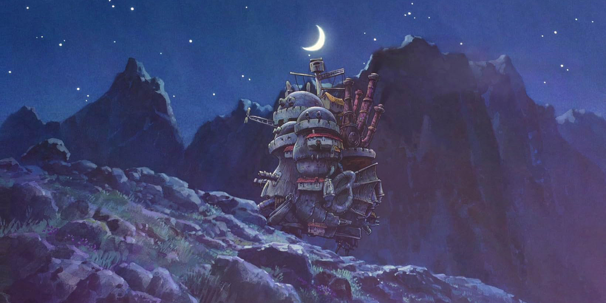

Year Released:
1988
Parental Advisory:
G
Run Time:
1h 26m
Genre:
Fantasy, Animation, Family
He’s your friendly neighbourhood forest spirit!
Two sisters move to the country with their father in order to be closer to their hospitalized mother, and discover the surrounding trees are inhabited by Totoros, magical spirits of the forest. When the youngest runs away from home, the older sister seeks help from the spirits to find her.
Year Released:
1989
Parental Advisory:
G
Run Time:
1h 43m
Genre:
Fantasy, Animation, Family
There's magic in the air!

Along with her black cat Jiji, Kiki settles in a seaside town and starts a high-flying delivery service. Here begins her magical encounter with independence and responsibility, making lifelong friends and finding her place in the world.
Year Released:
2001
Parental Advisory:
PG
Run Time:
2h 4m
Genre:
Family, Fantasy, Animation
Beauty, power, mystery, and above all heart.
A young girl, Chihiro, becomes trapped in a strange new world of spirits. When her parents undergo a mysterious transformation, she must call upon the courage she never knew she had to free her family.
Year Released:
2004
Parental Advisory:
PG
Run Time:
1h 59m
Genre:
Family, Fantasy, Animation
An animated tour-de-force... A delightful fairytale... A lovely film for all ages!
When an unconfident young woman is cursed with an old body by a spiteful witch, her only chance of breaking the spell lies with a self-indulgent yet insecure young wizard and his companions in his legged, walking castle.